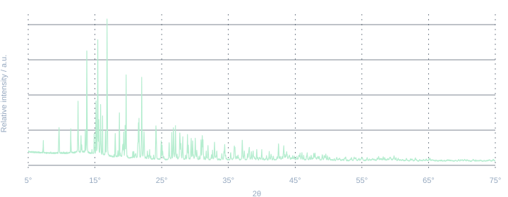

GANJIANG / DESKTOP
官方客户端干将下载中心
macOSWindows
把专业的 XRD 分析能力，带到你的日常研究中。
- 物相识别
- 多相分解
- 结构精修
GANJIANG FOR DESKTOP
从一张衍射图谱，到有证据的结构判断。
干将连接物相识别、多相分解与结构精修，
陪你走完每一步分析。
macOS Windows 为材料研究而构建
ANALYSIS / 001

从衍射信号出发，逐步识别与校验候选物相。
连接专业计算工具
01 / DOWNLOAD
前往干将下载中心，
选择适合你的桌面版本。
GANJIANG / DESKTOP
官方客户端把专业的 XRD 分析能力，带到你的日常研究中。
安装包与发布说明均在下载中心更新。
加入用户社区XMATCHER / XQUERYER
从 XRD 图谱寻找候选物相；有元素信息时结合条件检索，再通过结构校验逐步判断。
MATCHING / DECOMPOSITION
通过多相匹配与分解处理混合物相，按组合进行校验，进一步理解重叠信号。
WPEM / FULLPROF / GSAS-II
衔接专业精修工具，结合实测与计算图谱检验结构。也支持单个或多个 CIF 的 XRD 模拟与 PDF 卡分析。
03 / CREDITS & COST
按实际提交的收费计算累计。
先理解计费，再开始分析。
20,000 积分
从第一张图谱开始，探索干将的分析能力。
¥9.90 = 990 积分
≈ US$1.48
人民币兑换积分，按你的研究需要补充。
定期赠送积分
参与社区活动，获取更多积分。关注用户社区
按功能与实际提交次数计费。一次计算内部的迭代，不按迭代次数重复收费。
模型费用另计，不包含在工具积分中。默认模型按所用模型和实际 Token 用量计费；自定义模型由对应服务商计费。
以下为当前流程的积分参考，实际扣费以账单明细为准。人民币可以兑换积分，积分仅用于账号内消耗，不可兑换回人民币。
美元金额按积分充值比例折算，仅供费用比较，不代表积分可以兑换现金。
PLAN YOUR ANALYSIS
ESTIMATED TOOL CREDITS
本次流程参考积分
1 次流程 · 不含模型调用费用
每个账户赠送 20,000 积分。
充值比例：人民币 9.9 元 = 990 积分。 ≈ US$1.48
各次流程按相同配置估算，实际扣费以账单明细为准。
查看完整积分参考以下均为计算工具积分，不含模型调用费用。
| 功能 | 积分参考 | 美元参考 | 怎么计算 |
|---|---|---|---|
| XRD 模拟 单个 / 多个 CIF | 100 | ≈ US$0.15 | 单个或多个 CIF 在同一次任务中提交，均为 100 积分，包含 CIF 解析和理论峰计算。 |
| PDF 卡分析 | 800 | ≈ US$1.20 | 同一次报告可提交多个 CIF。 |
| 单相识别 XMatcher | 400 或 800 ＋校验费 | ≈ US$0.60 / US$1.20＋校验费 | 寻峰 400；峰数足够再匹配 400。一次返回多个候选，不按候选数重复收匹配费。 |
| 单相识别 有元素条件 | 700 或 1,100 ＋校验费 | ≈ US$1.05 / US$1.64＋校验费 | 在 XMatcher 费用上增加 XQueryer 300。 |
| 多相识别 默认双通道 | 600 ＋校验费 | ≈ US$0.90＋校验费 | 匹配 400＋分解 200；如需补查单相基线，每次再加 400。 |
| WPEM 精修 | 通常 1,820–2,420 | 通常≈ US$2.72–US$3.62 | 通常提交 3–4 次，每次 600；含一次最终校验。特殊情况补做两次试算，可再增加 1,200。 |
| FullProf 精修 | 最多 4,900 | 最多≈ US$7.32 | 首轮 2,000 积分，后续每轮 100；最多 30 轮，共 4,900 积分。轮数由云端决定，可能提前停止。 |
| GSAS-II 精修 | 通常 1,220 | 通常≈ US$1.82 | 一次计算 1,200＋一次最终校验 20。 |
每 20 积分 ≈ US$0.03
单相：每个候选 20 积分，额外峰位偏移校验每次再加 20。多相：每个组合 20 积分，组合内多个 CIF 仍算一次。WPEM / GSAS-II 精修：每成功完成并提交一次校验，计 20 积分。FullProf 不另加校验费。
功能积分按当前计费规则与客户端流程整理，实际扣费以账号账单明细为准。
GOOD TO KNOW
每个账户赠送 20,000 积分。需要更多积分时，可按人民币 9.9 元 = 990 积分的比例充值；社区也会定期举办活动赠送积分。
不可以。人民币可以兑换为积分，积分只能在账号内消耗，不能兑换回人民币。
一次计算内部的迭代不按迭代次数收费；另行提交收费计算才会累计费用。XMatcher 一次返回多个候选，不按候选数重复收匹配费，但分别进行的结构校验按实际次数收费。
查询结果、下载文件不额外收取计算积分。复用已有结果且没有重新提交计算时，不新增计算费用；若过程中实际调用了模型，模型费用仍另行计算。
会。只要实际调用模型，就会按照所用模型和实际 Token 用量计费，这部分不包含在计算工具积分中。使用自定义模型时，由对应模型服务商计费。
YOUR NEXT DISCOVERY STARTS HERE